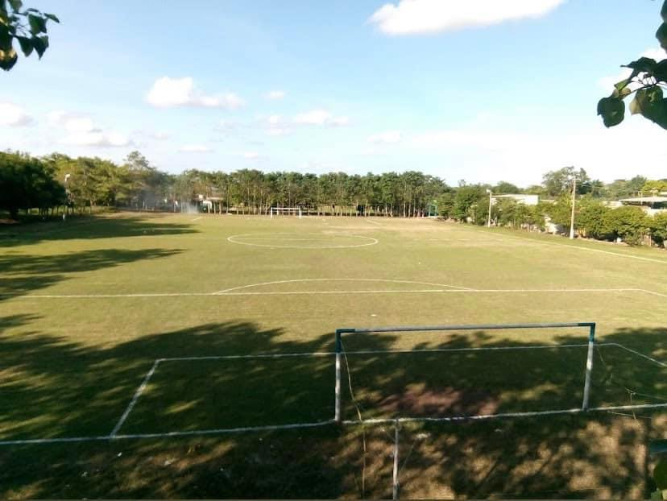

LUGAR TURÍSTICO DE POBLADO TRES
En la localidad del poblado 3 existen lugares espectaculares y espacios turísticos, uno de ellos, es el campo deportivo “El Fantasma” un campo que es catalogado uno de los mejores en toda la cuenca del papaloapan, este estadio, se encuentra ubicado justo en el centro de la localidad, aquí se lleva acabo el torneo más grande de la cuenca, “El Torneo Fantasma Dominical” que está conformado por equipos de 3 municipios, Tres valles, Tierra Blanca y Cosamalopan, es aquí en donde muchas familias de otros lugares se dan cita a presenciar encuentros de futbol, cuenta con tiendas y vendedores ambulantes,ademas que también es un espacio en donde las personas del pueblo asisten todas las tarde a hacer ejercicio, también es un lugar de usos múltiples como por ejemplo, aquí es donde se hacen los jaripeos y otros eventos de la localidad, sin duda un lugar muy agradable y muy visitado por muchas personas.
|  |